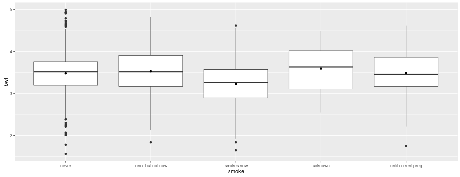
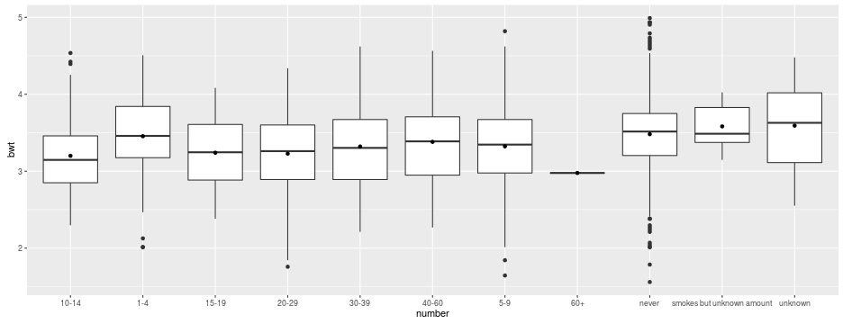

Session6
Mandy
Recap
Recap
You should know now:
- the basic concept of analysis of variance
- the usage of the command
lm()for analysis of variance - that
y ~ xin R mean y dependent on x (formula syntax) - how the visualize anova using boxplots
Exercise
- load the babies data set using
read_excel(): - the column
wtcontains the birth weight in ounces; add another columnbwtcontaining the birth weight in kg do an one-way anova of birth weight dependent on
- 1.
race(mother's race) - 2.
smoke(mother's smoking status) - 3.
number(number of cigs smoked per day)
- 1.
What are the percentages of explained variance in each model?
Taken separately, which of the three variables explained most of the variance of birth weight?
What is the mean birth weight of race mex?
Which level of each of the three predictors has the lowest (resp. highest) mean birth weight?
Visualize using
ggplot2!
Solution
library(readxl)
babies <- read_excel("session6dta/babies.xlsx",1)
babies$bwt <- babies$wt/35.274
m1 <- lm(bwt ~ race, data = babies)
m2 <- lm(bwt ~ factor(smoke), data = babies)
m3 <- lm(bwt ~ number, data = babies)
Solution
summary(m1)
##
## Call:
## lm(formula = bwt ~ race, data = babies)
##
## Residuals:
## Min 1Q Median 3Q Max
## -1.66245 -0.30168 0.01017 0.32201 1.72258
##
## Coefficients:
## Estimate Std. Error t value Pr(>|t|)
## (Intercept) 3.13069 0.07640 40.977 < 2e-16 ***
## raceblack 0.07955 0.08300 0.958 0.33809
## racemex 0.38890 0.11072 3.513 0.00046 ***
## racemixed 0.26558 0.12693 2.092 0.03661 *
## raceunknown 0.75319 0.51251 1.470 0.14193
## racewhite 0.31779 0.07831 4.058 5.26e-05 ***
## ---
## Signif. codes: 0 '***' 0.001 '**' 0.01 '*' 0.05 '.' 0.1 ' ' 1
##
## Residual standard error: 0.5068 on 1218 degrees of freedom
## (12 observations deleted due to missingness)
## Multiple R-squared: 0.04498, Adjusted R-squared: 0.04106
## F-statistic: 11.47 on 5 and 1218 DF, p-value: 7.661e-11
Solution
summary(m1)$r.squared
## [1] 0.04497971
Solution
summary(m1)$r.squared
## [1] 0.04497971
summary(m2)$r.squared
## [1] 0.05879809
summary(m3)$r.squared
## [1] 0.04663428
Solution
library(ggplot2)
ggplot(babies, aes(x = race, y = bwt)) +
geom_boxplot() +
stat_summary(geom = "point", fun.y = "mean")

Solution
ggplot(babies, aes(x = smoke, y = bwt)) +
geom_boxplot() +
stat_summary(geom = "point", fun.y = "mean")

Solution
ggplot(babies, aes(x = number, y = bwt)) +
geom_boxplot() +
stat_summary(geom = "point", fun.y = "mean")

Solution
coef(summary(m1))
## Estimate Std. Error t value Pr(>|t|)
## (Intercept) 3.13068601 0.07640112 40.9769674 1.993267e-231
## raceblack 0.07954547 0.08300438 0.9583285 3.380873e-01
## racemex 0.38890349 0.11071573 3.5126307 4.599375e-04
## racemixed 0.26558320 0.12692707 2.0924079 3.660861e-02
## raceunknown 0.75319447 0.51251426 1.4696069 1.419265e-01
## racewhite 0.31778537 0.07830927 4.0580812 5.262889e-05
Granova
Granova
- install (if not already done) and load the package
granovaGG - the following code produces a graphical representation of an anova analysis
- try to understand the different components
library(granovaGG)
granovagg.1w(babies$bwt,babies$smoke)
Recoding
Recoding
- there are different situation where it is advisable to recode variables e.g.
- some characteristic is coded in numbers but a level/label combination would be more appropriate
- one want to change a existing coding e.g. ja/nein to yes/no
- missing values are coded as numbers and we want to transform them into real missings
factors
- a factor is a vector that contain only predefined values
- it is used to store categorical data
- the
levels()-label combination of a factor defines the set of allowed values
table(babies$sex)
##
## 0 1
## 626 610
class(babies$sex)
## [1] "numeric"
factors
babies$sex.mf <- factor(babies$sex,
levels = c(0,1),
labels = c("male","female"))
class(babies$sex.mf)
## [1] "factor"
table(babies$sex.mf)
##
## male female
## 626 610
factors Exercise
- use
factor()to change themaritalandincvariable from numeric to factor- 1 = married, 2 = legally separated, 3 = divorced, 4 = widowed, 5 = never married
- 0 = <2500, 1 = 2500-4999, 2 = 5000-7499, 3 = 7500-9999, ..., 9 = 15000+, 98 = unknown, 99 = not asked
- table the two variables using
table()andprop.table(); what is the percentage of <2500 amongst married and what amongst never married?
Solution
babies$marital <- factor(babies$marital,
levels = 1:5,
labels = c("married","legally separated",
"divorced","widowed","never married"))
babies$inc <- factor(babies$inc,
levels = c(0:9,98,99),
labels = c("<2500",
paste(seq(2500,20000,by = 2500),
seq(4999,22500,by = 2500),sep = "-"),
"25000+","unknown","not asked"))
Solution
addmargins(prop.table(table(babies$inc,babies$marital),2))
##
## married legally separated divorced widowed
## <2500 0.02400662 0.06666667 0.00000000
## 2500-4999 0.15397351 0.26666667 0.40000000
## 5000-7499 0.14486755 0.06666667 0.20000000
## 7500-9999 0.14900662 0.00000000 0.00000000
## 10000-12499 0.11341060 0.06666667 0.00000000
## 12500-14999 0.10264901 0.13333333 0.00000000
## 15000-17499 0.05877483 0.06666667 0.00000000
## 17500-19999 0.11672185 0.06666667 0.20000000
## 20000-22499 0.02069536 0.00000000 0.00000000
## 25000+ 0.01738411 0.06666667 0.20000000
## unknown 0.09850993 0.20000000 0.00000000
## not asked 0.00000000 0.00000000 0.00000000
## Sum 1.00000000 1.00000000 1.00000000
##
## never married Sum
## <2500 0.16666667
## 2500-4999 0.50000000
## 5000-7499 0.00000000
## 7500-9999 0.00000000
## 10000-12499 0.00000000
## 12500-14999 0.00000000
## 15000-17499 0.00000000
## 17500-19999 0.00000000
## 20000-22499 0.00000000
## 25000+ 0.00000000
## unknown 0.33333333
## not asked 0.00000000
## Sum 1.00000000
change labels
babies$sex.jm <- factor(babies$sex.mf,
levels = c("male","female"),
labels = c("Junge","Maedchen"))
table(babies$sex.jm)
##
## Junge Maedchen
## 0 1236
recoding
- another kind of issue is a problem like the following:
- the
dracevariable contains 11+ races plus one unknown coding - coding 0-5 means all white, 6 mex, 7 black, 8 asian, 9 and 10 mixed, 99 unknown
library(car)
babies$drace <- recode(babies$drace,
'0:5="white";6="mex";7="black";
8="asian";c(9,10)="mixed";99=NA')
Exercise
- use the variables
raceanddraceto get the percentage of mixed paires (man and woman from different races)
Solution
prop.table(table(babies$race == babies$drace))
##
## FALSE TRUE
## 0.05660377 0.94339623